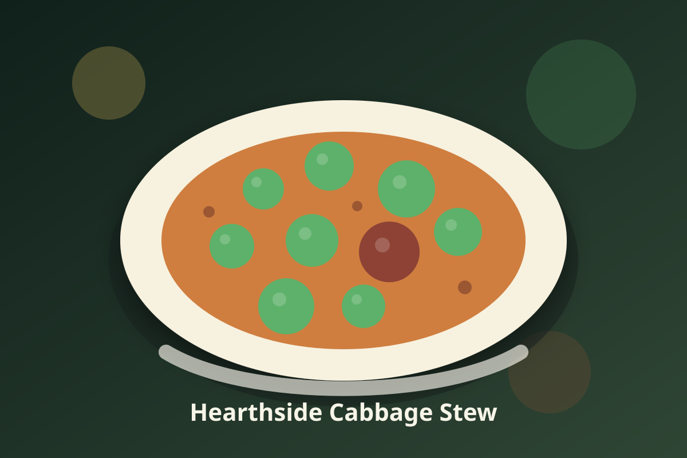

Indian ·
Hearthside Cabbage Stew
A comforting stew of golden sweet onions, chickpeas, and tender cabbage, warmed with cumin and finished with lemon.

Ingredients
- 1 tablespoon olive oil
- 2 sweet onions, chopped
- 3 cloves garlic, minced
- 1 tablespoon ground cumin
- 2 teaspoons smoked paprika
- 1 teaspoon caraway seeds
- 1 cup water
- 1 can chickpeas, drained and rinsed
- 1 teaspoon salt, plus more to taste
- 1 large cabbage, cored and shredded
- 1/2 teaspoon black pepper
- 2 tablespoons lemon juice
Instructions
- Select Sauté (medium) on the Instant Pot and heat 1 tablespoon olive oil. Cook the onions, stirring often, until soft and golden, 6-8 minutes.
- Add the garlic, cumin, smoked paprika, and caraway seeds and toast them, stirring, for 1 minute until fragrant.
- Pour in 1 cup water and scrape up the browned bits from the bottom of the pot. Press Cancel.
- Stir in the chickpeas and salt, then pile the cabbage on top without stirring.
- Lock the lid and pressure cook the cabbage and chickpeas on High for 3 minutes.
- Press the Venting button for Quick Release and open the lid. Check the cabbage with a fork: it should be tender but not mushy.
- Select Sauté and simmer the stew uncovered for 5-8 minutes, stirring often, until most of the liquid the cabbage released has cooked off.
- Stir the lemon juice and black pepper into the stew, taste, add more salt if needed, and serve hot.